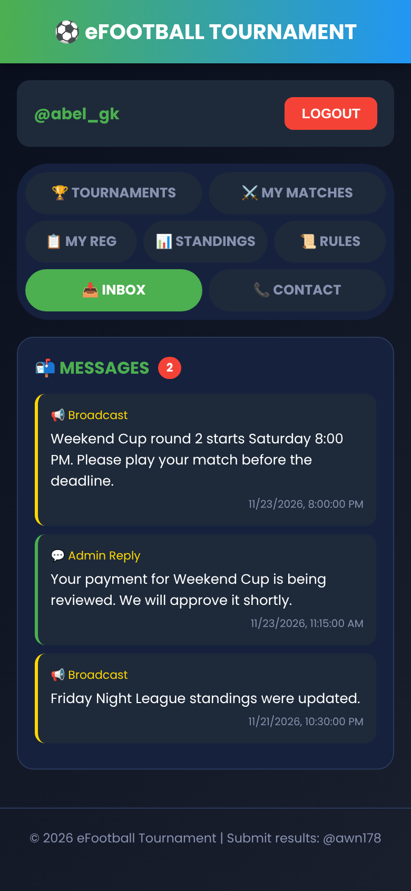

Programming
Core logic and problem solving with languages like Python, Java, and C++.
IntermediateHello, I'm
Fourth-year Information Science student at Jimma University, passionate about programming, web technologies, databases, and digital innovation. I build practical solutions and keep growing as a developer — one project at a time.

I'm an Information Science student at Jimma University, currently in my fourth year, exploring the intersection of programming, data, and the web.
My academic journey has given me a strong foundation in programming principles, web technologies, database systems, networking, and the fundamentals of artificial intelligence. I enjoy learning by building — turning ideas into working software.
I'm at an intermediate level in programming, and I'm committed to steady, hands-on growth. Rather than claiming expertise I don't yet have, I prefer to show what I'm building and let the work speak for itself.
B.Sc. in Information Science
Coursework spans programming, web technologies, database systems, networking, data analysis, and artificial intelligence fundamentals.
Intermediate proficiency across these areas — continuously improving through coursework and personal projects. Skill levels and descriptions are editable.
Core logic and problem solving with languages like Python, Java, and C++.
IntermediateBuilding responsive interfaces with HTML, CSS, and vanilla JavaScript.
IntermediateRelational database design, queries, and data modeling fundamentals.
IntermediateFundamentals of networking protocols and operating systems.
IntermediateExploring, cleaning, and interpreting data for useful insights.
IntermediateFoundational concepts of AI and machine learning.
Intermediate
A selection of personal projects. Technologies are listed only where verified.
Add screenshots to assets/ later by updating the image `src` values.

eFootball TournamentAdd screenshot at assets/efootball-tournament.jpgA project focused on organizing and managing eFootball tournaments. Built as a personal initiative to explore web-based competition management.
 eFootball MarketplaceAdd screenshot at assets/efootball-marketplace.jpg
eFootball MarketplaceAdd screenshot at assets/efootball-marketplace.jpgA marketplace-style project related to eFootball, exploring buying, selling, or trading concepts within a digital environment.
Deepen my programming, web development, and database knowledge through consistent practice and real projects.
Seek internships, collaborative projects, and hands-on opportunities to apply what I learn in real settings.
Create applications that solve meaningful problems and improve everyday experiences for users.
Work toward a professional role in the IT industry where I can contribute, learn, and grow long-term.
I'm open to internships, collaborative projects, and learning opportunities. Feel free to reach out — I'd love to connect.
The fastest way to reach me is through GitHub. For direct messages, use the email above once it's updated.
Visit GitHub ProfileBased in Ethiopia · Open to remote and local opportunities.